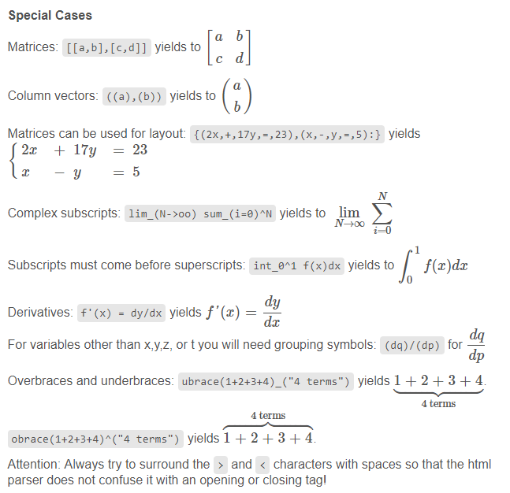

L'essentiel
Les extras
NoxuNote ne fonctionne pas exactement comme un logiciel de traîtement de texte classique. Votre note est décomposée en "blocs" qui sont construits à chaque fois que vous appuyez sur la touche Entrée.
Vous pouvez éditer un bloc en cliquant dessus ou en appuyant sur les flèches Haut et Bas du clavier.
Vous pouvez ajouter un bloc entre deux blocs précédents en cliquant sur la barre bleue séparatrice. Cette dernière s'affiche quand vous déplacez votre souris entre deux lignes.
Pour enregistrer, il suffit de nommer votre note et de cliquer sur Sauvegarder, c'est tout ! Votre note est stoquée au sein de NoxuNote.
Vous pourrez retrouver votre note dans le menu
NOTE : Les notes sont enregistrées dans C:/Users/(votre nom)/NoxuNote/notes/
Vous pouvez définir des titres en insérant des # au début de votre ligne. Il éxiste 3 niveaux, le titre principal, le grand titre, et le titre, ils sont représentés respectivement par ###, ## et #.
Il est possible de faire ressortir votre block en indiquant qu'il s'agit d'un encadré, d'une exclamation ou d'un texte marginal en plaçant respectivement les caractères suivants : [ pour l'encadré, ! pour l'exclamation et ( pour le texte marginal.
Insérez des images provenant du web en écrivant image = suivi de l'URL de l'image. Attention le lien doit impérativement se terminer par .jpg .gif, .bmp ou .png sinon l'image pourra pas être lue !
Vous pouvez écrire du code dans plus de 50 languages différents en commençant votre ligne par >
Vous pouvez écrire du code dans plus de 50 languages différents en commençant votre ligne par >
Pour créer un tableau, commencez votre ligne par / et séparez les cases du tableau également avec des /, n'oubliez pas la dernière pour fermer votre tableau.
Pour indiquer qu'une cellule prend plusieurs cases de large, il suffit de mettre plusieurs /.
Vous mettre autant de / que nécessaire.
Pour insérer une formule mathématique ou un caractère grec entourez votre expression de la manière qui suit :
$$ (Votre expression math) $$ .
De manière générale, retenez que le symbole _ permet d'écrire un indice (en dessous d'un élément), et que le symbole ^ permet de l'écrire en exposant.
Pour écrire plusieurs éléments en exposant, vous devez utiliser des parenthèses sinon l'exposant se limitera au caractère suivant. Ceci est également valable pour les indices, mettez toujours des parenthèses elles n'apparaitront pas et permettront à MathJax de reconnaître vos groupes
Vous pouvez écrire tous les symboles mathématiques dans leur notation normalisée anglaise, par exemple pour écrire une racine carée, écrivez sqrt()
La documentation complète du plugin est disponible sur http://asciimath.org/
Le calepin vous suit partout dans vos notes, il est sauvegardé dès que vous le modifiez et réapparaît de la même manière lorsque vous réouvrerez NoxuNote.
NOTE : Le calepin est stoqué dans C:/Users/(votre nom)/NoxuNote/todo.txt
Entrez une expression mathématique dans le calculateur pour obtenir le résultat.
Attention, indiquez les virgules avec des points !
Le mot clé in permet de convertir une unité en une autre
Entrez une valeur avec son unité et ajoutez "in" suivi de l'unité que vous recherchez pour effectuer une conversion.
Le calculateur supporte les conversions SI entre les différentes unités ainsi que les préfixes mili, mega, micro etc..
Vous pouvez dériver une expression selon la variable x dans le Dérivateur. Attention, le dérivateur ne peut pas interpréter d'autres variables que x.
Pour commencer à dessiner, cliquez sur dans le menu supérieur pour ouvrir une fenêtre de dessin. Une fois terminé cliquez sur la disquette pour l'ajouter à votre note.
Les dessins sont éditables en cliquant à nouveau dessus.
Effacez un dessin en cliquant sur la croix rouge.